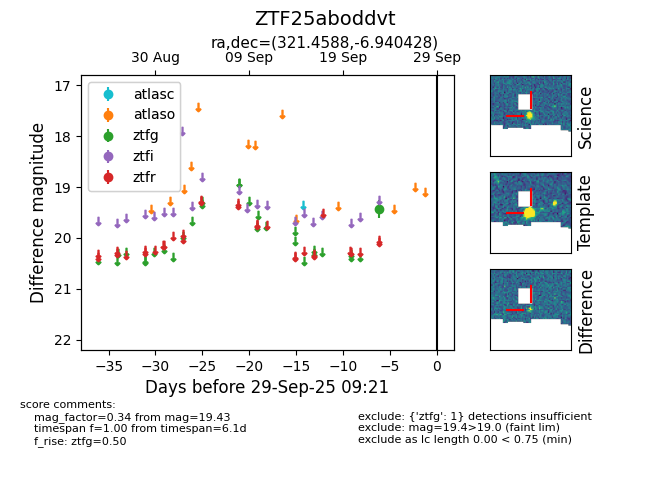

FINK: ZTF25aboddvt
Lasair: ZTF25aboddvt
ALeRCE: ZTF25aboddvt
ZTF25aboddvt (ztf,fink)
equatorial (ra, dec) = (321.4588,-6.94043)
galactic (l, b) = (45.6328,-37.32021)

last ztfg=19.43
1 ztfg detections